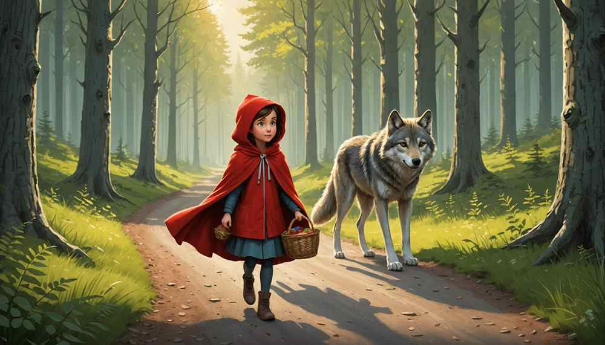

Bir zamanlar küçük bir kız varmış. Her zaman kırmızı başlıklı bir pelerin giydiği için ona “Kırmızı Başlıklı Kız” derlermiş.
Bir gün annesi ona bir sepet vermiş ve demiş ki:
“Büyükannen hasta, şu yiyecekleri götür ama ormanda kimseyle konuşma!”
Kırmızı Başlıklı Kız yola çıkmış. Ormanda yürürken bir kurtla karşılaşmış.
Kurt kibarca sormuş:
“Nereye gidiyorsun küçük kız?”
Kırmızı Başlıklı Kız cevaplamış:
“Büyükanneme gidiyorum. Şu yoldan ilerleyince küçük bir evi var.”
Kurt sinsi bir plan yapmış. Daha kısa yoldan koşarak büyükannenin evine varmış.
Büyükannesini dolaba kilitlemiş ve onun yerine yatmış.
Biraz sonra Kırmızı Başlıklı Kız eve gelmiş. İçeri girince bir gariplik hissetmiş.
“Büyükanne, kulakların ne kadar büyük!”
“Seni daha iyi duyabilmek için.”
“Gözlerin ne kadar büyük!”
“Seni daha iyi görebilmek için.”
“Ağzın ne kadar büyük!”
“Seni daha iyi yiyebilmek için!”
Kurt ayağa fırlamış ama tam o sırada bir ormancı kapıdan içeri girmiş.
Kurdu yakalayıp büyükannesini dolaptan çıkarmış.
Bundan sonra mutlu bir hayat yaşamışlar.
O günden sonra Kırmızı Başlıklı Kız ormanda tanımadığı hiç kimseyle konuşmamış.

Düşünme Kutusu
- Kırmızı Başlıklı Kız kurda neden inandı?
- Ormanda yürürken neler yapmamalıydı?
- Bu hikayeden ne gibi dersler çıkarabiliriz?